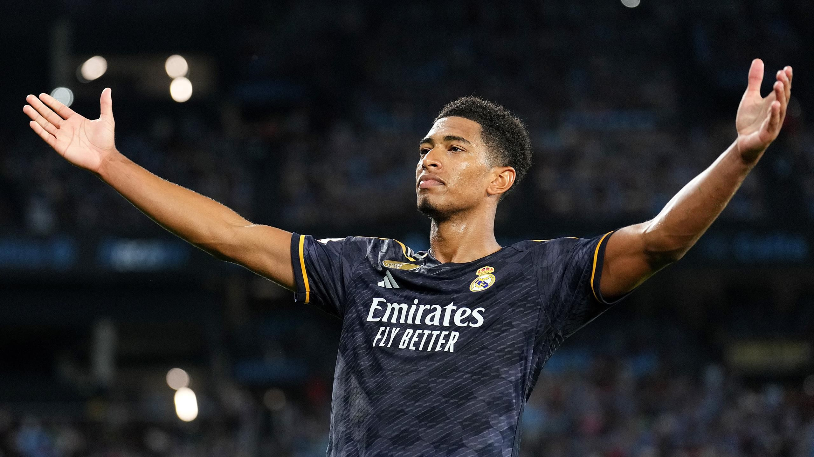
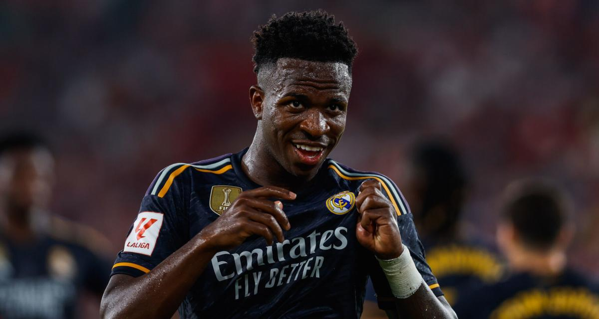
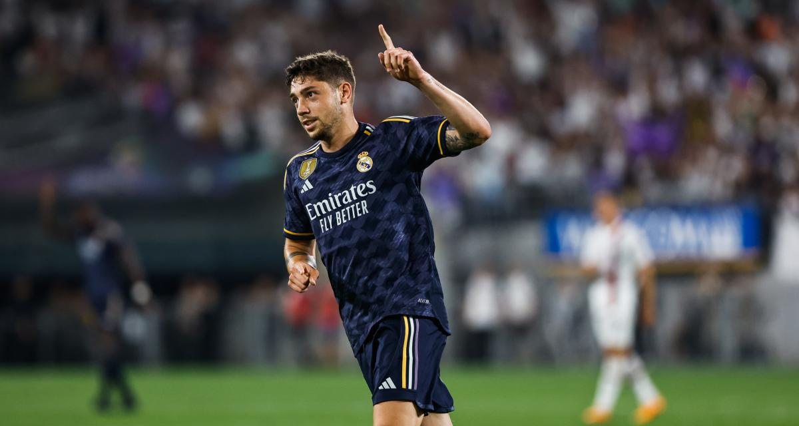

Real Madrid Won Against Napoli Last Tuesday
Real Madrid fought back to secure a barnstorming 3-2 win at Napoli in their Champions League Group C clash on Tuesday, with the Italian side's keeper Alex Meret scoring an unfortunate own goal to hand the Spaniards victory late in the second half.


